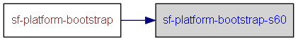

|
Helium API | ||||||
| prev next | frames no frames | ||||||
Location
D:\maintools\sf-config\sf-platform\build.xml:34:
Conditional execution
No conditions on target execution.
| Name |
|---|
| cmd |
| Name | Edit status |
|---|---|
| User editable properties | |
| build.drive | recommended |
| Internal properties | |
| build.id | discouraged |
| build.log.dir | discouraged |

<target name="sf-platform-bootstrap-s60">
<!-- Do touch on S60 variant.cfg to force raptor to export -->
<touch file="${build.drive}/${sf.spec.bldmefirst.s60.sbs.variant.cfg}"/>
<delete file="${build.log.dir}/${build.id}_bldmefirst-s60.log"/>
<property name="sf.compile.bldmefirst.command.sbsexport" value="sbs EXPORT --ignore-os-detection --export-only"/>
<!-- do bldmefirst stage 1-->
<for list="${sf.spec.bldmefirst.s60.exports}" delimiter="," param="sf.spec.bldmefirst.s60.export">
<sequential>
<echo message="Performing bldmefirst export on @{sf.spec.bldmefirst.s60.export}"/>
<exec executable="cmd" dir="${build.drive}" failonerror="true" append="true" output="${build.log.dir}/${build.id}_bldmefirst-s60.log">
<arg value="/c"/>
<arg value="${sf.compile.bldmefirst.command.sbsexport}"/>
<arg value="-b"/>
<arg value="${build.drive}/@{sf.spec.bldmefirst.s60.export}/bld.inf"/>
</exec>
</sequential>
</for>
<copy todir="${build.drive}/epoc32/tools/makefile_templates/s60">
<fileset dir="${build.drive}/sf/tools/makefile_templates">
<exclude name=".hg*"/>
<exclude name=".hg/**"/>
<exclude name="layers.sysdef.xml"/>
</fileset>
</copy>
</target>
|
Helium API | ||||||
| prev next | frames no frames | ||||||